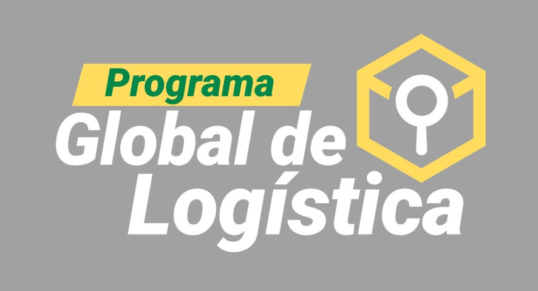

Evalúe el nivel de madurez de su operación logística en 10 dimensiones críticas de riesgo. Obtenga recomendaciones profesionales accionables.
💬 Dudas o comentarios · antonio.lopez@segurosbolivar.com
Complete la información para personalizar el diagnóstico
Diagnóstico generado por la herramienta SAPS 03-2026 · Seguros Bolívar · Ingeniería de Riesgos
Las recomendaciones son orientativas y no reemplazan una evaluación presencial de riesgos.
💬 Dudas o comentarios · antonio.lopez@segurosbolivar.com
Historial de diagnósticos realizados desde este dispositivo
Estamos mejorando esta herramienta. Tu opinión toma menos de 1 minuto y nos ayuda a servirte mejor.
Ingrese la contraseña de administrador